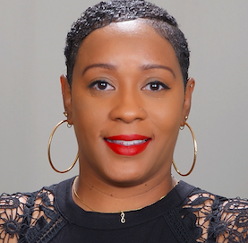

Dr. Sonya Prince, Ed.D

Summary
Dedicated erofessional and educator with over 15 years of classroom experience as a PreK-9 general education as well as gifted programs, some work in high school, and special education teacher roles, behavior specialist, assistant principal, professional development facilitator, grade-level chair, and curriculum design presenter. Known for facilitating diversity, increasing test scores, and collaborating with stakeholders. Excellent communicator, organizer, and facilitator of learning at various levels of education and professional settings. Building rapport with all stakeholders while establishing and maintaining relationships with diverse populations. Venturing off into the world of technology and web development has been a passion and realistic goal that has been added to the wealth of knowledge I possess in education and leadership.
Education
- Grand Canyon University, Doctor of Education in Organizational Leadership w/ Emphasis in Organizational Development (2015-2019)
- Lewis University, Master of Education in Principalship & Special Education Directorship (2012-2013)
- Governors State University, Master of Arts in Special Education (LBSI) (2009-2010)
- Southern Illinois University, Bachelor of Science in Elementary Education- Endorsement- Language Arts & Middle School (2004-2009)
Work Experience
Imagine Schools, Phoenix, Az
Teacher Coach/Mentor
07/2023-Present
- Conduct and facilitate meetings to analyze, review, and evaluate student teacher performance
- Supervise and support teachers and staff on academic, professional, and technology related practices
- Provide insight and suggestions on highly effective standards, practices, and curriculum implementation
Grand Canyon University, Phoenix, Az
Faculty Supervisor- Teacher & Principal Candidates
12/2021-Present
- Provide insight and suggestions on highly effective standards, practices, and curriculum implementation
- Conduct and facilitate meetings to analyze, review, and evaluate student teacher performance
- Supervise and support cooperating teachers and teacher candidates within the teaching pedagogy
Back to Basics, Mecklenburg, NC
Online Teacher- Qualified Teaching Tutor
05/2022-Present
- Conduct pre & post assessments to determine student performance level and placement in reading and math
- Conduct a safe and fun online learning environment based on common core standards
- Facilitate and support the reading and math curriculum at grade-level for at-risk/tier 3 learners
Kaleidoscope-Maxim-360 Degree, Phoenix, Az
Contracted Special Education Teacher/Service Coordinator
09/2021-06/2023
- Conduct pre & post assessments to determine student performance level and placement in reading and math
- Conduct a safe and fun online learning environment based on common core standards
- Facilitate and support the reading and math curriculum at grade-level for at-risk/tier 3 learners
Casa Grande Elementary School District, Casa Grande, Az
1st- 2nd Grade Teacher/Virtual Teacher
08/2019-09/2021 & 08/2013-10/2016
- Empower students through technology, differentiation, leadership, advocacy, and goal attainment
- Strong emphasis on critical thinking, higher order thinking, and Common Core alignment
- Create and implement lesson plans and deliver effective in-person/online instruction for all learners
- Facilitator in district wide professional development meetings, functioned as grade level team lead
Job Skills
- Web Development
- Academia Research
- Strategic Planning
- Microsoft/Google Suites
- Innovative Teaching & Learning Style
- Presentation & speaking Skills
- Research/Data Analysis
- Effective Time and Organizational Managment
- Customer Service
- Excellent Team Builder/Player
Other Related Skills: Level 1 & 2 Google Trained, Coding and Robotics (Tinkercad & Ozobots), Canva, Adobe, Smart-board, Ben-Q's, Document Cameras, SPSS & MaxQDA
Awards/Certificates/Accomplishments
- Dean's List (2008-2013)
- Efficient & Effective Award-in Education (2011-2013)
- Rodel Aspiring Principal (2016)
- Highly Qualified Status & Certificate- in Education (2019-2021)